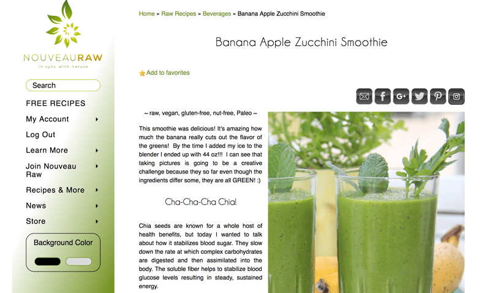
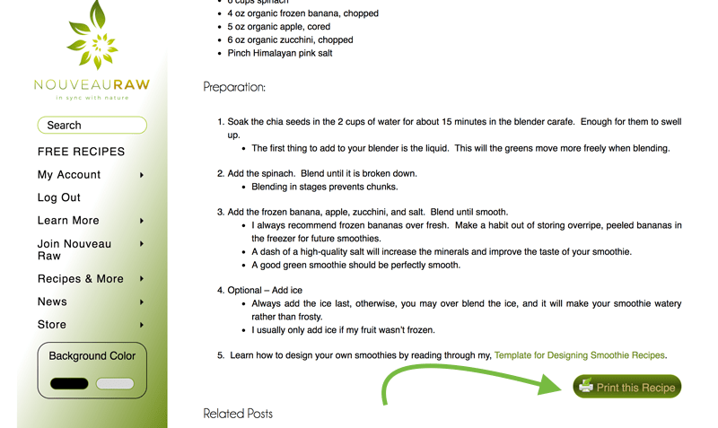
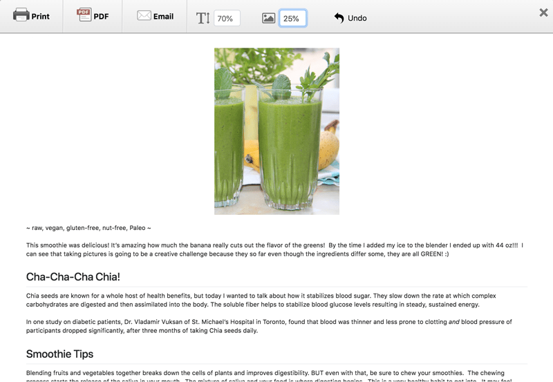
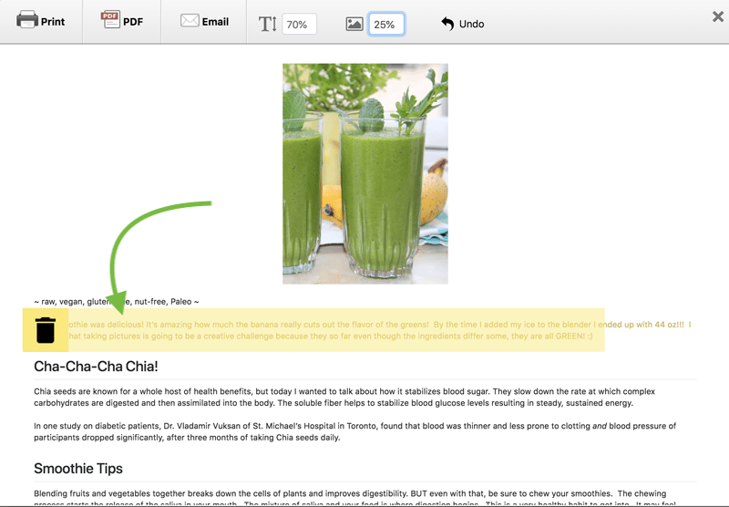
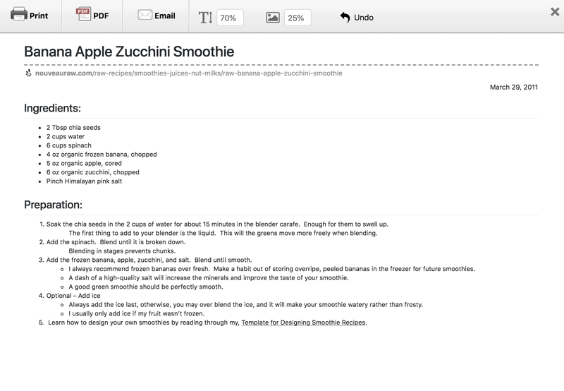

#6 – How to Print a Recipe
One of the features on Nouveauraw.com is that you can print the recipes. As you read through the recipe posts, you will find a print button towards the bottom right-hand corner. A nice big green button that can’t be missed. Go ahead and click on that… I will wait for you. Once you do that, a page will pop up for printing. It will include everything that you read and saw in that post.
But here’s the scoop, you don’t have to print EVERYTHING. I know printer ink is like gold, so you can easily delete anything off of the page that you don’t want. It’s very simple to do but allow me to walk you through the process.
Ok, so you have landed on a recipe that you want to try.

Scroll to the bottom of the recipe page and click on the “print” button.

This screen will pop up.

As you scroll over the page, different sections will be highlighted, and a trash can icon will be present. If you don’t want to print the photos or text, click on the trash can and it will delete it.

Below is an example where I deleted the photo and the post write up. Once happy with it, click the “print” button in the upper left-hand corner. Enjoy!

I hope you found this helpful. Happy printing! amie sue
© AmieSue.com